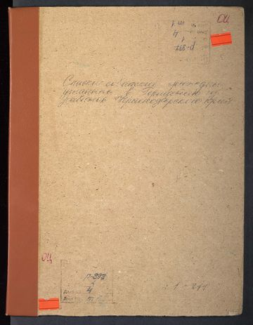
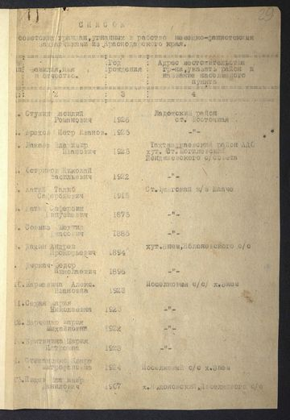
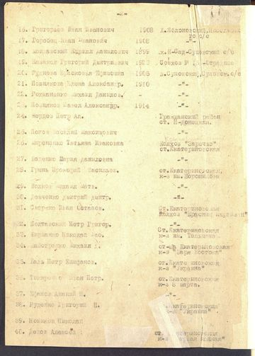
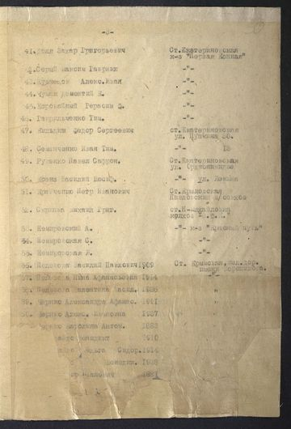

архивное дело · станица Екатериновская
Список угнанных в Германию
На обложке дела написано: «Списки советских граждан, угнанных в Германию из районов Краснодарского края»; в описи то же дело названо «угнанных в рабство немецко-фашистскими захватчиками». Это перечень пострадавших: людей, вывезенных с оккупированной территории на принудительные работы. Не осуждённые и не пропавшие без вести. Списки составлялись после освобождения района, то есть с 1943 года.
Список
Приведены все 65 записей дела. Записи 24–65, это станица Екатериновская и соседние населённые пункты Крыловского района; записи 1–23 относятся к Ладожскому, Тахтамукайскому и Гражданскому районам, хутору Энем и Суповскому сельсовету. Чтобы оставить только станицу, поставьте отметку ниже.
Чтение выверено по сканам. Список набран машинописью военного времени с плохой копии, поэтому спорные фамилии сверялись отдельно, глазами. У 4 записей начало фамилии утрачено в самом документе, бумага повреждена: такие места показаны многоточием как есть. Дочитать их по скану нельзя, и додумывать окончание мы не стали, хотя по годам это, судя по всему, одна семья.
Про год рождения. В деле для этого отведён отдельный столбец, и мы приводим его в точности так, как он заполнен. У записей 1–23 и 56–65 год проставлен, у записей 24–55, то есть у всего блока по Екатериновской, столбец в самом документе оставлен пустым: прочерк в нашей таблице означает пустую клетку машинописи, а не потерю при распознавании. Год самого дела на сканах тоже не указан, оно датируется по описи.
Колхоз или улица в записи, это место жительства и работы человека на момент составления списка. В столбце «Чтение»: выверено, чтение подтверждено по сканам Никитой Харченбергом; предварительно, прочитано по скану, но глазами владельца архива ещё не сверялось; повреждение бумаги, начало фамилии утрачено в самом документе.
Если вы узнали родственника или видите ошибку в написании фамилии, напишите нам: поправим и укажем, с чьих слов.
| № | Фамилия, имя, отчество | Год рожд. | Место жительства | Чтение |
|---|---|---|---|---|
| 1 | Ступин Василий Романович | 1926 | Ладожский район, ст. Восточная | предварительно |
| 2 | Брехов Пётр Иванов. | 1925 | Ладожский район, ст. Восточная | предварительно |
| 3 | Лакаев Владимир Иванович | 1925 | Тахтамукайский район ААО, хут. Ст. Могилевский, Шенджиевский с/совет | предварительно |
| 4 | Остриков Николай Васильевич | 1922 | Тахтамукайский район ААО, хут. Ст. Могилевский, Шенджиевский с/совет | предварительно |
| 5 | Хатий Талиб Сафербиевич | 1915 | ст. Бжегокай, к-з «Шпаче» | предварительно |
| 6 | Хатий Сафербий Гинуяевич | 1875 | ст. Бжегокай, к-з «Шпаче» | предварительно |
| 7 | Совмиз Мерчид Хасович | 1885 | ст. Бжегокай, к-з «Шпаче» | предварительно |
| 8 | Дахин Андрей Прокофьевич | 1894 | хут. Энем, Яблоновский с/с | предварительно |
| 9 | Дыркач Фёдор Николаевич | 1896 | хут. Энем, Яблоновский с/с | предварительно |
| 10 | Кармазина Алекс. Ивановна | 1923 | Поселковый с/с, х. Энем | предварительно |
| 11 | Седая Мария Николаевна | 1923 | Поселковый с/с, х. Энем | предварительно |
| 12 | Варченко Мария Михайловна | 1922 | Поселковый с/с, х. Энем | предварительно |
| 13 | Критинина Мария Петровна | 1923 | Поселковый с/с, х. Энем | предварительно |
| 14 | Степаненко Клара Митрофановна | 1924 | Поселковый с/с, х. Энем | предварительно |
| 15 | Пищен Владимир Данилович | 1907 | х. Яблоновский, Поселковый с/с | предварительно |
| 16 | Григорьев Иван Иванович | 1908 | х. Яблоновский, Поселковый с/с | предварительно |
| 17 | Горобец Иван Иванович | 1908 | х. Яблоновский, Поселковый с/с | предварительно |
| 18 | Молдавский Кирилл Данилович | 1899 | х. Н-Сад, Суповский с/с | предварительно |
| 19 | Казаков Григорий Дмитриевич | 1923 | совхоз № 15, Отрадное | предварительно |
| 20 | Руднева Прасковья Ефимовна | 1905 | х. Суповский, Суповский с/с | предварительно |
| 21 | Познякова Елена Александр. | 1910 | х. Суповский, Суповский с/с | предварительно |
| 22 | Рохманенко Михаил Данилов. | — | х. Суповский, Суповский с/с | предварительно |
| 23 | Позняков Павел Александр. | 1914 | х. Суповский, Суповский с/с | предварительно |
| 24 | Кердев Пётр Ал. | — | Гражданский район, ст. Ново-Донецкая | выверено |
| 25 | Попов Василий Максимович | — | Крыловский район | выверено |
| 26 | Мироненко Татьяна Ивановна | — | ст. Екатериновская, колхоз «Заречье» | выверено |
| 27 | Беденко Мария Даниловна | — | ст. Екатериновская | выверено |
| 28 | Грынь Прокофий Васильевич | — | ст. Екатериновская, к-з им. Ворошилова | выверено |
| 29 | Волков Михаил Матвеевич | — | ст. Екатериновская | выверено |
| 30 | Демченко Дмитрий Дмитриевич | — | ст. Екатериновская | выверено |
| 31 | Сморжко Иван Остапович | — | ст. Екатериновская, к-з «Красный партизан» | выверено |
| 32 | Полтавский Пётр Григорьевич | — | ст. Екатериновская | выверено |
| 33 | Бирманко Николай Васильевич | — | ст. Екатериновская, к-з им. Тельмана | выверено |
| 34 | Майстренко Михаил Х. | — | ст. Екатериновская, к-з «Заря Востока» | выверено |
| 35 | Баль Пётр Епифанович | — | ст. Екатериновская, к-з «Украина» | выверено |
| 36 | Токаренео Иван Петр. | — | ст. Екатериновская, к-з «8 марта» | выверено |
| 37 | Юханов Ананий П. | — | ст. Екатериновская | выверено |
| 38 | Руденко Григорий Н. | — | ст. Екатериновская, к-з «Украина» | выверено |
| 39 | Новиков Николай | — | ст. Екатериновская | выверено |
| 40 | Дедов Алексей | — | ст. Екатериновская, к-з «Первая Конная» | выверено |
| 41 | Доля Захар Григорьевич | — | ст. Екатериновская, к-з «Первая Конная» | выверено |
| 42 | Серый Максим Гавриил | — | ст. Екатериновская | выверено |
| 43 | Кузнецов Алексей Иванович | — | ст. Екатериновская | выверено |
| 44 | Чумак Дементий К. | — | ст. Екатериновская | выверено |
| 45 | Коровайный Герасим Ф. | — | ст. Екатериновская | выверено |
| 46 | Гаврильченко Тим. | — | ст. Екатериновская | выверено |
| 47 | Кильдиш Фёдор Сергеевич | — | ст. Екатериновская, ул. Пушкина, 30 | выверено |
| 48 | Семенченко Иван Тимофеевич | — | ст. Екатериновская | выверено |
| 49 | Руденко Павел Саррон. | — | ст. Екатериновская, ул. Орджоникидзе | выверено |
| 50 | Ксенз Василий Иосифович | — | ст. Екатериновская, ул. Ленина | выверено |
| 51 | Кравченко Пётр Иванович | — | ст. Крыловская, Павловский з/совхоз | выверено |
| 52 | Скрипка Михаил Григорьевич | — | ст. Ново-Михайловка, колхоз | выверено |
| 53 | Немировский А. | — | к-з «Дра…» | выверено |
| 54 | Немировская С. | — | к-з «Дра…» | выверено |
| 55 | Немировская Л. | — | к-з «Дра…» | выверено |
| 56 | Полевода Василий Павлович | 1909 | ст. Крымская, жел. дор. им. Ворошилова | выверено |
| 57 | Полевска Нина Афанасьевна | 1914 | ст. Крымская | выверено |
| 58 | Пелевота Валентина Васильевна | 1936 | ст. Крымская | выверено |
| 59 | Чернис Александра Афанасьевна | 1911 | не указано | выверено |
| 60 | Чернис Александра Ивановна | 1937 | не указано | выверено |
| 61 | Чернис Каролина Антоновна | 1883 | не указано | добавлено при сверке |
| 62 | …вайло Венедикт | 1910 | не указано | повреждение бумаги |
| 63 | …айло Ольга Сидоровна | 1914 | не указано | повреждение бумаги |
| 64 | … Венедикт | 1938 | не указано | повреждение бумаги |
| 65 | …ор Иванович | 1881 | не указано | повреждение бумаги |
Сканы дела
Обложка и три листа списка. Нажмите, чтобы открыть в полном размере.
Обложка дела

Лист списка, 1

Лист списка, 2

Лист списка, 3
